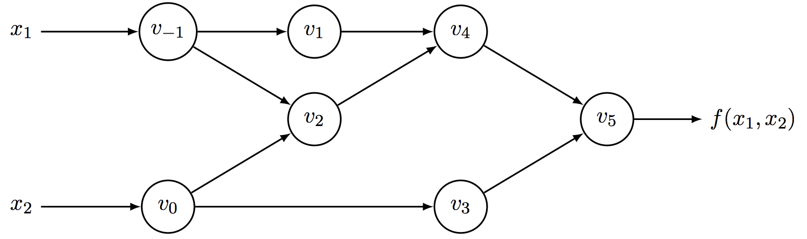

大家对自动微分可能比较陌生, 不过对深度学习应该是耳熟能详的吧. 深度学习属于机器学习中的一个热门分支, 其基本的套路是定义一个损失函数, 然后通过梯度下降的方式来最小化损失函数, 从而对整个模型进行优化. 但是在计算机中如何具体的计算对应的梯度呢? 这方面不乏相应的研究, 其中自动微分就是一种现今广泛应用的技术.
引言
在计算机统计学中, 导数起到了相当重要的作用. 例如在机器学习中基于梯度的优化方式: 梯度下降需要计算相关参数的一阶导数, 然后对其更新; 牛顿法需要计算二阶导数; 因此如何在计算机中有效并且准确的计算出导数成了一个基础的, 且通用的问题.
在计算机中计算导数的方法通常可分为四类:
- 手动微分, 手动计算表达式导数, 然后进行编码, 当然这是不明智的方法, 且不灵活.
- 数值微分, 根据导数定义, 使用有限的数值差分去逼近导数真值. 该方法存在着舍去误差和截断误差, 且对于大规模导数计算不实际.
- 符号微分, 在计算机代数系统中手动编写函数表达式, 由其来计算对应的导数符号形式. 当然仅支持系统中提供的表达式的梯度代数形式的计算, 而且随着函数表达式的复杂度的增加, 会导致其导数的代数表达式爆炸.
- 自动微分, 计算中间变量的梯度, 然后使用链式求导法则求得各个变量的梯度, 也是本文讲解的微分方式.
与其他微分比较
数值微分
自动微分不是数值微分. 数值微分是数值计算中, 通过有效的差值计算来获得导数的近似计算. 对于函数$f(x)$, 其导数定义为:
因此可以用一个很小的$h$去替代$\Delta x \rightarrow 0$近似的拟合函数导数. 可以得到:
这是根据导数定义来的, 所以对于多元的函数也可以使用同样方式去拟合导数. 数值微分计算导数在编程上很容易实现, 不过对于多元函数其计算量也不是很小, 它需要$O(n)$的时间复杂度. 并且还需要小心选择$\Delta x$的大小, 过大的话导致近似导数值与真实导数误差较大, 即截断误差较大. 过小的$\Delta x$超出计算机浮点存储范围又会增大舍去误差. 截断误差是因为数值微分(又叫有限差分)使用差分来近似替代真实导数, 舍去了误差影响. 对于$f(x+h)$做泰勒展开有:
带入式(2)可得:
其中$o(h)$我们将其定义为泰勒展开余项. 为了减少截断误差, 即减小余项, 我们可以使用中心差分近似:
对于$f(x+h)$和$f(x-h)$进行3阶泰勒展开有:
将(6)带入(5)则有:
这样将截断误差减小, 不过相应的舍去误差成了主要的影响. 为了更加准确的逼近真实导数, 需要选取更小的$h$, 由于计算机存储浮点数的精度有效, 导致导数计算时存在着舍去误差. 舍去误差与截断误差是此消彼长的, 随着$h$的大小变化, 这两种误差如下图所示:
当然还有很多研究如何减少这两种误差, 不过数值微分最大的缺点在于计算量, 求n维输入的导数, 其时间复杂度为$o(n)$. 由于深度学习有大量的参数, 数值微分显然不合适.
符号微分
符号微分是借助计算机线性系统, 例如Mathematica, Maxima, Maple以及机器学习框架Theano等, 将表达式组织成一定的数据结构, 比如表达式树. 最后使用求导规则, 将微分计算表达为对应的代数形式. 例如:
随着表达式的形式变得复杂, 对应的微分的代数形式也会变得相当复杂, 这个问题称为expression swell, 如下图所示:
符号微分虽然能够准确的求得对应表达式的代数形式, 不过表达式中存在许多重复的部分, 例如上标$n=3$时, $(1-2x)$在表达式中出现了多次, 这样会导致大量的重复计算. 而且表达式越复杂, 其导数的代数形式也会更加复杂, 实际上我们并不关心导数的具体代数形式, 而是其实际值. 这两个缺点同样限制了符号微分在具有大量参数的通过梯度来优化的机器学习应用中.
自动微分
所有的数值计算都可以看做是由一系列导数形式已知的元素操作组成, 对这些元素操作按照链式求导法则依次计算微分, 最终得到整个表达式的微分. 例如我们计算$f(x_1, x_2)=ln(x_1)+x_1x_2 - sin(x_2)$, 可以将其表示为下图的计算图:

上图中每一个节点都是一个导数和计算形式已知的元素操作, 例如$v2$节点表示对于两个输入$v{-1}$和$v0$的乘法操作$v{-1} \cdot v_0$. 中间变量的使用, 可以大大简化导数的表达式形式, 只要按照一定的求值顺序(拓扑顺序, 或者反着的拓扑顺序), 将节点计算的梯度进行累加, 最终能够得到整个表达式的所有微分值.
计算图是实现自动微分的一种重要手段, 不过自动微分最重要的本质是使用中间变量(即元素的操作)和链式求导法则, 任何有关数值计算的都逻辑都可转换成一个基于数值计算的序列, 因此对于分支, 循环, 递归等都可使用自动微分来计算梯度. 在实际计算的过程中, 我们不仅能够得到准确的梯度值, 而且不需要关心梯度具体的代数形式.
自动微分的主要形式
自动微分使用链式求导法则将表达式看做是一个复合函数, 例如$h(x) = f(g(x))$. 那么:
根据是先已知$\frac{df}{dg}$的微分代数形式和$\frac{dg(x)}{dx}$具体梯度数值, 还是已知$\frac{df}{dg}$的具体梯度数值和$\frac{dg(x)}{dx}$的代数形式, 自动微分可分为前向模式和后向模型.
前向模式
如图3所示, 我们定义节点$v_i$对于$x_1$的偏导为:
前向求导的过程如图4所示:
使用雅克比矩阵, 很容易将自动微分扩展到多维的情况. 在前向过程中, 对于第l层节点来说, 可以看成函数$f_l: \mathbb{R}^n \rightarrow \mathbb{R}^m$, 其中输入为相互独立的$a_i^{l-1}$, 输出为对应的$a_j^l$. 那么这一层对于输入的导数可以表示为:
在前向计算节点$a^l$对输入$x$的偏导时, 此时已经知道节点$a^{l-1}$对输入$x$的偏导, $a^{l-1}$的值和$a^l$对$a^{l-1}$的偏导代数形式, 因此我们可以计算出$\textbf{J}_{f_l^{l-1}}$. 根据链式求导法则我们进一步可以求出$a^{l}$对输入$x$的偏导:
为了区分1和$l$, 这里用$x$替代了1. 所以实际上前向模式为多个雅克比矩阵连乘.
后向模式
后向模式即已知$l$层节点对输出$y$的偏导数, 求$l-1$层节点对输出$y$的偏导数, 不断向前最终抵达输入节点, 从而求得所有的微分值. 例如图3的后向模式如图5所示:
后向模式同样可以表示为多个雅克比矩阵连乘的形式. 对于输出$y$, 此时知道$a^l$对$y$的偏导数, $a^{l-1}$的具体数值和$a^{l}$对$a^{l-1}$的微分代数形式, 从而可求得$y$关于$a^{l-1}$的偏导数:
在求$\textbf{J}{f{l-1}^l}$的时候, 需要知道$a_{l-1}$的具体值, 所以后向模式其实是分两个阶段的, 首先前向计算中间变量的值, 然后后向计算梯度.
前向和后向的选择
既然后向模式需要先前向计算中间变量的值, 那么它相对于前向模式的优势在哪里呢? 前面说了, 自动微分可以用雅克比矩阵来表示, 实际上及自动微分就是一连串的雅克比矩阵连乘:
因此微分的计算可以看成$L-1$个矩阵乘法计算, 为了简化计算, 输入的雅克比矩阵形状是$n \times k$, 输出的雅克比矩阵形状是$n \times m$, 中间的雅克比矩阵shape都是$k \times k$, 且中间只有一个雅克比矩阵. 简化后的自定微分可表示为:
前向模式是由左向右做矩阵乘法, 而后向模式是从右向左做矩阵乘法. 对于矩阵$A{m, k}$, $B{k, n}$乘法的时间复杂度为$O(mkn)$. 那么前向模式的时间复杂度为$O(nkk + nkm)$, 后向模式的时间复杂度为$O(mkk + mkn)$. 因此在选择前向模式还是后向模式的时候, 主要看输入和输出的规模比较. 在机器学习中, 通常是$n >> m$, 后向模式比前向模式运用更为广泛.
实现
在实现自动微分的过程中, 通常需要考虑实现的性能, 包括计算量和内存耗用. 当然还需要考虑一些数值计算的问题, 比如计算数学表达式$\log(1+x)$, $\sqrt{x^2+y^2+z^2}$和$\tan^{-1}(\frac{y}{x})$需要使用$log1p(x)$, $hypot(x, hypot(y, z))$以及$atan2(y, x)$来表示.
自动微分因为其重要性, 所以有众多的开源代码. 其实现按照优化方式可以分为在内存管理方面进行优化, 计算图优化, 数值计算优化等, 不过这些优化都是相互影响, 所以这里还是采用[1]中的分类方式, 按照使用方式来分类;
- Elemental Libraries: 使用自动微分库暴露的接口, 手动的将算法分解成能够自动微分的原子操作.
- Compilers and Source Code Transformation: 实现一个编译器或者源码转换其, 能够自动将算法分解成能够自动微分的原子操作, 从而进行自动微分.
- Operator Overloading: 将算法中的一些操作编写成对应的运算符, 这些运算符需要提供前向计算和反向梯度计算, 从而能够依据链式求导法则进行自动微分.
在[1]中一大串AD的实现库, 这里挑选几个文档丰富, 时间较新的库:
- ADOL-C: 源码中的文档对于整个项目讲解得相当详细.
- autograd: Modeling, Inference and Optimization with Composable Differentiable Procedures文中有一节详细介绍了该项目的设计.
- tangent: google开发的纯python开发的微分调试器, 值得一看.
类似pytorch, Chainer以及Ceres Solver等库虽然有详细的文档, 不过考虑性能以及一些扩展性, 例如分布式计算, 深度学习的一些特性等. 对于仅仅想弄清楚自动微分的过程的人来说, 这些库都过于庞大, 所以并没有罗列到上面.
上面介绍了在实现自动微分中应该考虑的问题, 以及一些解决方案. 在下一篇博客中, 我们会实现一个简单的自动微分框架, 能够进行常用的微分计算.